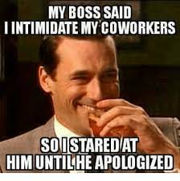
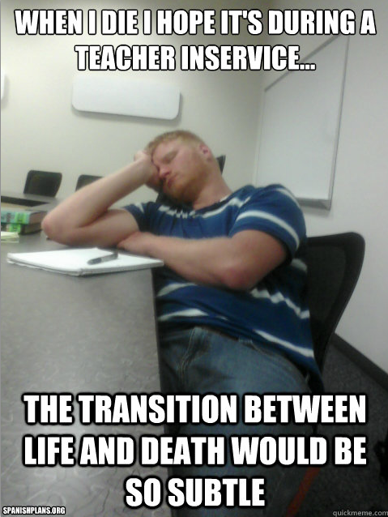

How To "Teacher"
Introduction and Qualifiers
I remember a unit in my teaching degree that was effectively trying to prepare us for the day-to-day reality of what it was like to teach. To be honest at that stage I was so baffled by jargon and theory that its fresh honesty and real-world perspective captured my attention. As I gathered my experience in the following years I would often reflect back to that class and ask myself; what would I add? What have I learnt? What “real” lessons would help make the transition of student teacher to classroom teacher easier?
Below is by no means an exhaustive or final word on the teacher experience. What it is, is the attempt of an over-thinker to create concise tips that help me navigate this profession which have helped me create a fulfilling career thus far. I’ll try to keep the waffle to a minimum, but you may have to indulge me a little. Not everything will apply, but even through disagreement I hope this will help you map out teaching as it applies to you.
I see the teaching career as concentric circles. In the dead centre is the student. This is the crux of what we do: our student is the navigational star, the beginning and the end. The next circle is your team. A good team is greater than the sum of its parts. They play an integral role, both personally and professionally. From there we have the school, which is the vessel that picks the course and sets the tone. It’s what you signed up for when you exaggerated your exploits and told them how much you love what they are doing. And finally, the outer circle: you. This is the lens that covers everything. It is an omniscient flavour that turns the career of teaching into your profession. I am going to go through each circle and attempt to give concise advice on what to expect and how to behave.
One more thing, I by no means have got this down to a fine art. This is less of my practice and more of what I’d like my practice to be. I guess that's why they call it practice.
The Teenaged Student

They are just human kids
Seems obvious but it is worth keeping in mind. They are not fully formed adults that have a firm grip on what it takes to interact in society. They can do a good job of it, and they have been trained for it for over a decade, but even the most mature adolescent has biological constraints on how they behave. There is always a tug of war of expectation vs acceptance. You need to find the sweet spot between; asking enough of them so they represent the best version of themselves, but not too much that you resent each other.
Here are some things to remember when dealing with kids:
- Their impulse control is poor, both due to neuro development and their craving for attention
- Their sense of self is fragile
- They can find it hard to concentrate on anything that is not relevant to them. Which unfortunately will be a lot of what you say
- They are not loyal. They have not accumulated enough experience and reflection to build core values and apply them
- They can lie. Lying is a short cut (if foolish) to either protection or pleasure. Some people need a life time of experience to understand the folly of this
- They are self centered. They are discovering their world and identity, and from what they can tell at this stage the world does revolve around them
- They want to be cool. Teenagers crave their peers to tell them they like them. It is at this stage that they truly care what people (people they like) think
This is without factoring in their personal story. This is a negative look at students and by no means am I saying every student is all of these things. Use this insight for when they disappoint, frustrate and upset you. They are works in progress and you have the privilege of being one of the sculptors hands.
Useful when:
- Lie despite being in the face of facts to the contrary
- After you have clearly and succinctly given them instructions, they have made eye contact with you nodded, and then proceeded to ask you a question that indicates they did not hear a word you said
- They show off
- Get defensive when they have clearly done something wrong
- Do the exact thing you told them not to do
- They behave in manipulative ways


You are not a human adult to them
You are their teacher. Students will see you as "other". And this is necessary. They won’t know you have feelings, they have no idea you used to be just like them and because you don’t really have anything to offer them they won’t care. Proof for this is the dramatic shift in their acknowledgement of you at the start of a new year when they start their new classes and no longer have you. It is as if they never met you. You are an institutional avatar of education. This illusion gives you power but can also breed resentment. It is the relationship they need to see as education not the person. Not an easy ask, but too much either way is trouble.
Useful when:
- Students lack manners
- A student consistently bucks against authority
- When you are abandoned instantly when the school bell sounds
This is the worst version of them
Best case scenario; all your students are the worst versions of themselves. We want our students to grow into happy fulfilled servants of a better world. Every human has a trajectory of happiness and wellbeing and most (despite what the media portrays) improve as their life progresses. We learn through mistakes far more efficiently than any other process. We are working with the naive and gullible. They are learning and growing through mistakes which you will inevitably witness and perhaps be victim to. As Jesus said let those amongst us who have not sinned throw the first stone. Some of them will humble you in their quality of character and some will appall you, but all have the capacity to grow and get better no matter where their starting point is. That's what we want for them, that’s what we signed up for. Forgiveness is a powerful catalyst.
Useful when:
- They bully
- They steal
- They spread rumours
- They lack follow-through on assurances and goals agreed to
They have to know you care
We treat our family the worst, and the best for that matter. We crack it irrationally, take out our frustration and they wear the brunt of our bad moods. Obviously not ideal and I’m not justifying it but the point is we do and we can because at the end of the day they know we love them (it becomes unhealthy and a problem when they don’t). As a teacher you are going to have to hold a hard line. It is your job to be on watch of their behaviour and to step in when they behave outside of the agreed boundaries. And boy are they going to test you. I won’t tell you how hard you need to be, that’s up to you and is something the following tips may address (and every teacher has their own approach) but regardless you will have to lock horns and assert dominance at some stage. This is ok, healthy and manageable. Sometimes it is best to get it over and done with. Sometimes with a large amount of unruly kids I explicitly say I am looking for someone to make an example of, pounce on the first person who slips up. Now I would never do this with students who did not know me. Furthermore, any student I chastise I will always find time to talk to them privately to explain and empathise with them. This is the key. They have to know you care. Otherwise they will breed resentment which will not only corrode your relationship with them, but also their relationship with learning.
Tips to show you care:
- Explain yourself thoroughly when chastising
- Ask them how they feel and repeat it back to them to show you empathise
- Develop banter, just be careful to protect the professional relationship
- Get to know them (more on this later)
- Be vulnerable; play games with them and lose, tell them appropriate stories about your life, etc
- Say sorry and own mistakes
Useful when:
- You have to gain control and don’t have the time to negotiate
- When work needs to be done and you need a focused class room
- When they are misbehaving for other teachers, in particular casuals
- When they become more disenfranchised and disconnected from their education as they go through puberty or some life crisis

You can’t be their best friends
You are their teacher. That is a special and unique relationship that will supersede all other ways you will connect with them. This relationship gives you an important power that will allow you to help grow them in a largely agreed upon manner. By prioritising your friendship you are selfishly indulging in something that benefits you more than it does them. You absolutely need to be friends with them but this needs to be within the grounds of a professional teacher student relationship. This is particularly a hazard for young teachers who can relate to students more than they can staff. I not only highlight this for ethical reasons (although this is imperative) but for the lack of boundary this creates. Kids need firm, reliable and fair boundaries. I’d go as far as to say they crave them. Not only that, they will consistently look for and test these boundaries. This is a difficult and nuanced approach. You will love these kids and care for them. You will have favourites and least favourites. You will share life experiences and bond. But as long as they go to school you must remain their teacher first. For their sake.They have friends and they have family already, but you hold a special role that these others cannot fill.
Tips to keep boundaries:
- Avoid nick names. Both you and them, particularly within the first couple years of knowing them
- Don’t indulge hearing kid gossip
- Anything you share from your personal life make sure it goes through a professional filter
- No social media connections
- Focus on shared interests as opposed to shared colleagues
- Be aware of when a student has shown an unhealthy connection to you, flag it with someone and respectfully pull away
- Pounce on anything that crosses a line and be explicit what you didn’t like and why
Useful when:
- You want the students to focus
- Behavior management in general
- You teach known students in a new context (casual or extras)
- Taking kids on excursions
- A student begins to cling to you
Pick your battles, but win every one of them

We had a prac teacher about to complete their study and start casual teaching. My coordinator asked me in front of him, what advice would I give to him. I said walk straight up to the biggest kid in the class and punch him in the face. We laughed, of course, and then I one eighty’d and said “Look don’t stress too much. The kids will automatically feel like they have the lesson off. Help the ones that want to learn learn and keep the clowns from doing anything stupid”. It might help to understand we were working at a reasonably tough all boys school. When I reflected on it, it seemed a little contradictory. Fight them and let everything go. As I thought about this more and more I came to realise the wisdom here. You are fighting a war not one battle. If you were to take on every discretion you will most likely burn out and definitely do more harm than good. Pick your hills to die on wisely. But do pick them. There will be crucial moments where you need to draw a line in the sand. These moments unfortunately can be tricky to spot for a multitude of reasons; personal issues, work load, etc. Letting stuff slide is fine if you do it purposefully and safely. Let students know you are letting it go and where the line will be should they choose to cross it. But should you choose to battle; you must win. Chucking a tantrum is not winning, it's actually losing (and don't worry we all lose sometimes). Have a plan for when they cross the line. Execute it as emotionless as possible and with as little audience as possible. Any threats must be realistic, supported by school policy, be given with warnings and executed swiftly.
Useful when:
- A student is having a bad day but usually does well
- You are having a bad day: chuck the blinkers on and ask yourself if it is as bad as you think
- You are witness to something indirectly and wondering if you should do something
- Weather induced craziness- rain, wind, etc
- Minor indiscretions

Avoid arguments
Should you come to a disagreement with a student it is best to be as systematic as possible. Ask them to explain their actions. Listen to them (this may reveal something you were unaware of). Clearly communicate what you didn’t like and what will happen if it occurs again. Generally speaking, avoid asking the student why they did something or what they were thinking once it has been established. Things like “who do they think they are” and broad personal criticism are rarely, if ever, useful. This is super tempting and at times unavoidable, but ultimately self-indulgent. Keep to the plan. If your plan is backed by policy and clearly communicated, you are in the best position you can be. Once you start arguing with the student it becomes murky and adversarial. But this is all way easier said than done.
Useful when:
- Problematic students
- New students who you are still setting the boundaries with
Teacher = subject
I love asking the kids questions. If I am struggling to get work from them then I’ll settle for a conversation. I figure if nothing else can be done this lesson I can improve my relationship with them. Same goes for the kids that get their work done quickly. I always find it insightful to ask which subjects they like and don’t like. Then I ask why. You might be surprised how often the reason they do or do not like a subject comes down to who they have.You are the subject to them. You are their access point, their window into your KLA. This has a few implications but most importantly it highlights the importance of your relationship with them. This is the conduit to their education. If you generate too much resentment, this resentment could create real barriers to growth. Relationships are at the core of what we do.
“Good teachers know their content, great teachers know their students”
I was told this my first year out. You may have heard it yourself. It honestly took until the above realisation until I knew what this meant (some 7 or 8 years) what this meant. Initially I saw this from a pedagogical lens. Differentiation and the like. But now I see, to know your student is to have a healthy, reciprocated teacher-student relationship. That is a learning friendship within the institutional bounds of highschool. If you can nail this (once again, way harder than it sounds) you are nailing teaching.
Useful when:
- Start of the year with new classes
- Your patience is being pushed
- Year 7 classes
The Team
Be a load bearer
I’m a huge believer in being the change you want to see in the world. I love working in a team where everyone is doing all they can to share the load and support each other. So this is what I do. I never look for reciprocation when I stick to what I believe, but most of the time I get it. You know what I hate? Shared dishes for dinner. You know like the family might order 4 different dishes of Thai and we all share. I hate it. I’m a fast eater and an overeater. I just want my portions clearly defined, I don’t want to have to worry and pace myself, and I want clearly defined shares. I do not work like this. My team's work is my work. You’ve got lots on? I’ll find a way to help out. You want to try something innovative? You had me at you Why? Because it's heaps better that way. I never expect it in return, and to be honest I don’t need it, but you get it more often than not. Teams are artificial families that can function or malfunction. You spend nearly as much time with them. Be the family member you want others to be.
Say hi, Every. Single. Time.
Some would say humans are inherently selfish. I’d say focused. We get enamoured and mesmerised by our own perspective and narrative; we completely ignore other viewpoints. Honestly I put it down to bandwidth. The human brain is amazing but its certainly finite with what it can handle at one point. It still blows my mind that there are around 7 Billion people with as deep, rich, sad, interesting and profound experiences as mine. And it is impossible o have this at the forefront of your mind all the time. But you do need to try. No matter their role in your school, acknowledge every single person on your school staff. They are as special as you, have an impact on your wellness and are working towards the same goals as you. Have you ever walked past someone, been ignored and wondered if you did something wrong? Rehashing conversations to look for the clue that might explain your perceived slight. You are constantly in a relationship with everyone around you. Protect and nurture all. School can be a battlezone sometimes, look after your allies. In terms of this with students I tend to leave it up to them as I don’t want them to feel awkward or test professional boundaries, but there are certainly students I will nod or say hi to everytime I see them.
Mistakes are opportunities to show your class
Nobody likes making mistakes, obviously. But don’t be scared of them. As long as you are legitimately applying yourself and being responsible any mistake will be because of incompetence or ignorance not because of irresponsibility. Own it, reflect and grow. This is more impressive than not making mistakes as it probably indicates you are trying.Furthermore, it models to perfectionistic students that making mistakes is normal and part of the process. As long as you are trying to do the right thing, seeking help and are being transparent you are safe. Furthermore you will be seen as trustworthy and a person of integrity.
Agreeing doesn't mean changing your mind
In some ways a department is tougher than family because there is no cultural law of loyalty within teams of workers. Therefore once you disagree on something the potential for fall out is quite high. So with charged discussions, whether it's feedback on work you did or a discussion about core values, you need to be comfortable with accepting a different point of view. Furthermore I would challenge you to fully listen and sit in the other argument. Silence your internal defender and be alright with a different ‘right’. There are of course times to challenge and stand your ground but these are less than you realise. Your ego will do its best to hide these. Your empathy and ability to understand will build trust and respect and you will also learn a lot. It will also buy you time to process the new information which may eventually change your perspective, which you can then do in a less embarrassing way.
Look after them/ protect each other
Teaching is tough, make no mistake. Our job is to not only have strong relationships with teenagers but also to steer them to do things they don’t find inherently useful. I won’t go on about the multitude of stresses, but I could. Teacher burnout is more normal than not. It is a fiercely mentally and emotionally tough job. So look after and protect your team. Our students' safety is paramount, of course, but always have your teammate's back. Don't indulge in students judging or gossiping about other teachers. When a student complains about another teacher, just focus on what the student can do and move the focus away from the teacher. Now if there is any chance of malpractice or anything else nefarious, absolutely flag it to your leaders, but in the day to day slings and arrows, give your colleague your full support.

Use their strengths and support their weaknesses
Needless to say, everyone is different. The longer a team works together the more the uniqueness of each individual molds together, and a successful team will merge into one high functioning organism. Where ever your teammates' skill sets lies lean on their strengths and protect their weaknesses. By leaning on strengths I mean ask them for help and advice. Letting someone support and help you is one of the fastest tracks to building relationship. In term or supporting areas they are not as strong in; be humble and protective of things they havent as much experience in. Help upskill them while at the same time downplaying it and focusing on growth mindset. A weakness is simply something we need practice at, Be super careful when being playful around something someone may find vulnerable; things like age, balding, lack of a certain skill set etc. By all means jest and have fun, but keep in mind that we all have vulnerabilities.
Say sorry
Whether it’s because you got delayed and someone had to cover for you, or a complete error of judgment; go out of your way to have the hard conversation. Say sorry unequivocally. If you are sorry because of the way they interpreted it, then you're not actually sorry. There is no shame in it, in fact when the dust settles it is quite noble. Empathise, own it, be brave and then grow. It’s a rare disagreement where one person is 100% correct. Find where your responsibility was and bear it. People can avoid hard discussions because they “Don’t like conflict”. Massive cop out, who likes it? Pull up your big person pants and do what needs to be done.

The School
The power of positive assumptions
You are a small part of a big machine. There will be moving parts you will barely register. Yet you still will feel the effects of things you did not see in place. These gaps of information you will fill with educated assumptions. We have to, no choice. When possible make these assumptions lean on the positive side. We instinctively lean towards narratives that put us in the centre of the action. This will lead us to think any negative effects we feel are some way directed at us. Classic example is someone over taking us and then jumping on our lane when it was clear that lane was finishing. We mostly assume it was a jerk move. That’s a negative assumption. Instead we could assume they are running late and need a favour from us. This is a positive assumption. To protect relationships and your own mental health lean towards the explanations that are healthiest. No, don't be naive,a victim or a push over either. That doesn’t serve anyone. But until you have clear evidence; ask questions and assume the best intentions. At the least it will stop you feeling guilty when you realise someone you were hating on was actually trying to do the right thing. This is particularly relevant when judging decisions made by leadership.
Terms of the week
Never forget your context. The school year is a linear journey through regular stops. Within the term it will start with fresh optimism into industrious focus which degrades into overburdened despair, bursting into the rejoice of freedom. As you focus on maintaining your “To Do” list you can forget the bigger picture. There are sections of the term where you absolutely need to put the blinkers on and pick less battles. As workload increases and external deadlines are set (reports, interviews etc) you need to care for yourself. This is also true from a meta perspective with the year. I call these “terms’ of the week. Term 1 is Monday. Now Monday gets a bum wrap. Sure, commitment and duty suck, but the novelty and joy from reconnecting with colleagues actually makes it “ok”. Still probably the second worst day but not too bad, Term 1 is an exciting term, with new classes and opportunities coming off a significant break. Term 2, on the other hand, stinks. It is Monday afternoon into Tuesday night. Not much to look forward to except all the responsibilities and deadlines you would get in Term 4 without the coming reprieve. The middle holidays are a crucial pressure valve and Term 3 is a welcome restart. Term 3 is Wednesday. Wednesday is like the kid at school that was cool but still got decent grades. You are over the hump, the report and assessment process restarts and you are well connected with your kids. Work hard during this one and get ready for the weekend. Term 4 is Thursday afternoon into Friday night: my favourite of the terms. There is a sense of accomplishment and pride for having survived and the 6 weeks of holidays coming up are everything you think they will be and more. As your year progresses keep your eye on the prize. Check yourself during the arduous times. And be aware the experience is similar for the students.

Could you be loved and be loved?
I love a bit of Bob Marley, who doesn’t. The song “could you be loved” always confused me. I love the tune but I was sure that it should have been “could you love and be loved” Why would he repeat the same phrase twice? So, I used my artificial brain (google) and found out it was a political song. It talked about leaders being loved by the population, as well as the other political stakeholders they had to deal with. That’s pretty cool, in my opinion. I have never worked at a job where the workers were not questioning their leadership's decisions. It’s understandable that we analyse everything our leadership does, as we have big stakes in it. But we will always miss so much of the picture. It is a super tough road to walk. Tyrannical leaders exist but they’ll be obvious. Do your best to have faith in the leaders; they can't make everyone happy all the time. If they are good people (and they most likely are), support and carry them when they make tough choices.

Bigger than you
Schools are more than institutional education centres, they are living breathing communities. Furthermore they have been founded and built by consciously chosen and worded core values. Once you sign up to a school you have committed to raising students to the agreed upon tune. This is important two fold; 1) you are here for the students 2) you are here for them in the way our profession and your school decides. You must be the professional “you”. Find an identity or a space within where you are true to yourself but also the responsible professional with the students best interest at heart.
You are your school
A teacher is more than a job it is a lifestyle. You have chosen to role model to our next generations how we should act and behave. This does not stop at three pm. Furthermore you are a representative of your school. No ones saying you can’t go to the shops with your ugg boots on, but I’d keep the shirt on when you're in the footy stand cheering your team on. Whether you like it or not you are now a prominent community member. As a teacher you have been given a remarkable amount of trust. Remember and protect this privilege.
Buy in
Chores suck. But I did find that once I got over the inconvenience and tried to do a job well, they got a lot easier. Similar feeling with the schools and the multitudes of initiatives and professional development requirements. Yeah it feels superfluous and yes you are time poor, but it is what it is. Furthermore it is your colleagues and friends that are driving these initiatives. They are striving to add value. Buy in. Get on board, be the one who responds, fill in a survey and have someone watch your class. It is classic “homework”. Pain in the back until it's done, and then it’s so beneficial. Once you buy into what the school is doing, not only will the time spent no longer be you sitting in negativity but you will improve as a teacher.
You
Have patience
The difference between you in week 1 and week 10 is how much patience you have. Patience is a virtue. Have no doubt this is the secret sauce to a long and prosperous career. If you don’t have it, don’t worry; you will. The reality is you are communicating to some of the worst communicators going round. You will repeat, reword and plead to get your message through. And chances are, it won’t fully make it. It is nothing short of amazing sometimes how students, despite all signs showing they are trying, completely miss what you say. Your clientele are some of the most distracted and least reliable people in the market. And the worst thing is? They rarely do it on purpose. To top that off you need them to want to listen to you. On the bright side it’s never a bad thing to develop your patience and you will never come across more powerful teachers (besides your own children)
Be brave
It’s bloody scary. Obviously not horror movie scary, but intimidating none the less. Take everything head on. Be a grown up, have the hard conversations. Be direct and explicit and avoid wishy washy language. Avoid qualifiers and ambiguous language, particularly around anything contentious. I remember a student asked me at a sports competition if we could get the bus to stop at McDonalds on the way home. Not wanting to be a jerk but also keen to get home I was stuck. So I said “we’ll see”. The surrounding students bursted in cheers, high fiving and saying “Yesss we are going to Macca’s”. Whoops. Now saying no had become a lot harder.

Avoid shortcuts
Anything done quicker is usually done worse. In this I am specifically referring to working with students. Bullying a student into complying is a short cut. Whether it be through firm voice or hard looks it is a short term quick fix solution. Sometimes we have to, if it is a unsafe situation, time constraints etc. But it is always less than ideal. Try and always have the time to explain and empathise. Good clear communication is paramount.
Have a good hard look in the mirror
The secret to all learning is feedback. Without it we might as well draw in the dark and never turn the light on. It’s a tender process with our fragile ego being super defensive. I don’t want to get too philosophical but from what I can tell the ego is way more hindrance than help. Furthermore, people will be scared of hurting yours. You really need to be quite critical and perceptive to see the true story of, or value of, how you act. People will rarely be up front, and if they are, who can say their intentions? Be super reflective in your practice. Never think you can’t get something out of looking at the feedback. There is no way you will nail it every time, and that is good because every time you don’t nail it, you have something to learn. Don’t trust yourself either. The most dangerous liars in the world are the ones who believe their own lies
Smash being humble
I’m a believer that there is no such thing as free-will. This is a deep and vast rabbit hole we shall step around but this philosophy grounds me. I put my fortune down to luck and my mistakes down to choices. This serves several purposes but mostly it allows me to be grateful for the people around me and empowers myself to improve. Humility is the strength of vulnerability. It allows people around you to respect, trust and believe in you. It creates no barriers and opens many opportunities. It is pride while being grateful, confidence without arrogance and sensitivity without weakness. You do you by all means, but this has worked wonders for me.
Go in expecting a loss
This one's a tricky one to explain. One of the most powerful, yet barely mentioned, forces in the psychological world is expectation. This mere perspective or position can dramatically impact nearly any experience (perhaps every). Your expectation of a given outcome will be the framework within which you evaluate a situation. Not only this; but just the foretelling of the situation will at times have a profound effect on the outcome. Think of the fictional person who is told how they are to die. Then all their efforts to avoid this ironically cause it. I apply this to any charged situation where the outcome weighs heavily on me. In particular, job interviews. Go in with “I’m ok if I don’t get it”. That way if things get tough you won’t be as quick to hit the panic button. Furthermore, if you do miss out, the grieving process has begun. Don’t get me wrong, give it your all. This needs to be built off a profound belief in yourself. But recognise and let go of all things you don’t have control over. Sit back and enjoy the ride, no matter which way it rolls.
Be who you want your students to be
Not long after I became a teacher I was walking down a street when I came across some rubbish on the ground (discarded food wrappers). It made me pause. If I were a student, and this was the playground I would like them to pick it up and take it to the nearest bin. Not only was I not a student and this was not school it was worse. I am a adult and this is the real world. I now felt obliged to do this. And fair enough. Hypocrisy does nothing for no-one. Don’t ask anything of anyone you don’t ask of yourself.
Because of this lens I now consciously:
- Pick up any rubbish I come across particularly when on playground duty as to role model
- I avoid talking during meetings where people are presenting
- Notice the person who seems to need a friend
- Avoid doing something other than what I’m asked to do on my computer while at meetings
- Help people pick up or clean up equipment after being used
- Always thank presenters when I’m part of a class
- Don’t just try and sit as far away as I can when I am part of a class
- Don’t push in line when lining up for anything
- Listen to others without waiting for where I can jump in and refer attention back to myself